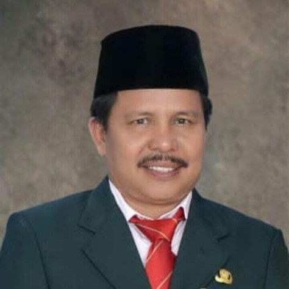
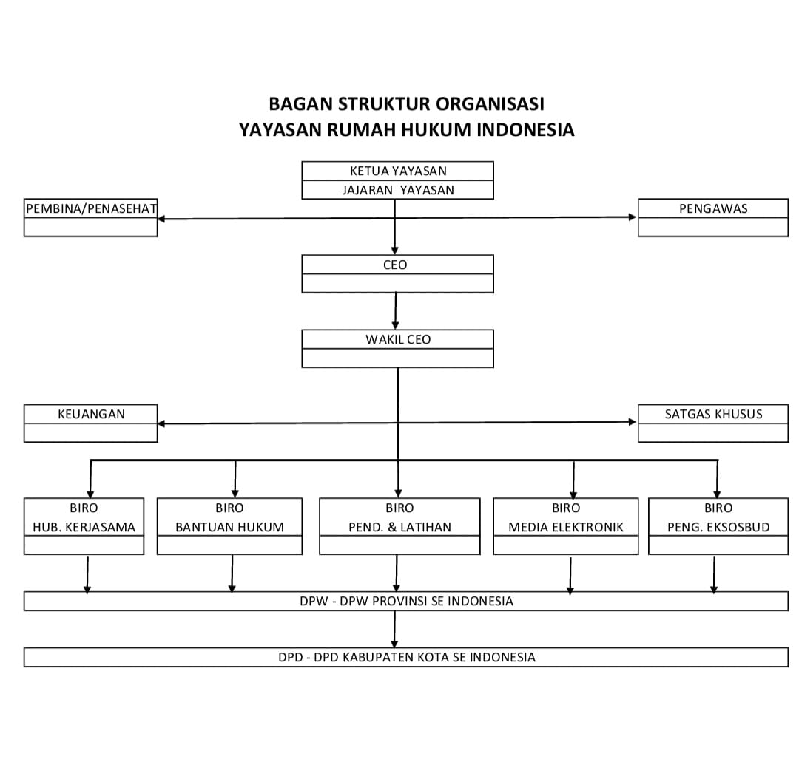
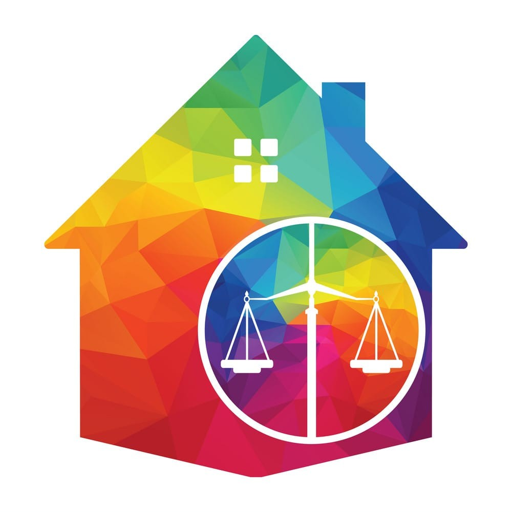

Pendiri
Team members need to learn how to help one another. A team becomes more
than just a collection of people when a strong sense.

Dr H Misri Hasanto,SH.,M.Kes.,CPLA
CEO RHIR
H Fadly Is Suma,SH.,MH.,CTA
Wakil CEO RHIR
H Fadly Is Suma,SH.,MH.,CTA
Wakil CEO RHIR
Persyaratan
Syarat & Prosedur bagi Inisiator DPD & DPW RUMAH HUKUM INDONESIA RAYA Dalam membentuk Pengurus Seluruh Provinsi dan Kabupaten/Kota se-Indonesia.
Tugas Inisiator
Syarat & Prosedur bagi Inisiator DPD & DPW RUMAH HUKUM INDONESIA RAYA Dalam membentuk Pengurus Seluruh Provinsi dan Kabupaten/Kota se-Indonesia.

About Us
Kami adalah tim hebat yang bekerja untuk mewujudkan impian bisnis Anda
Visi
Mewujudkan Keadilan yang Bermanfaat Bagi Rakyat Indonesia Demi Tegaknya Supremasi Hukum
Misi
- Membina Kecerdasan Masyarakat untuk Meningkatkan Kesadaran Hukum Rakyat Indonesia.
- Membangun Hubungan yang humanis dengan seluruh element dan Instrumen Negara Kesatuan Republik Indonesia.
- Mewujudkan Kader-Kader Hukum Putra Putri Terbaik Bangsa yang memegang Teguh dan Mengamalkan Amanat Pancasila dan UUD 1945.
Tujuan
- Lembaga Pendidikan dan Pelatihan Non Formal Dibidang Hukum Guna Tercapainya Kecakapan Hukum di tengah tengah Masyarakat.
- Lembaga Bantuan Hukum Masyarakat yang memberi Pendampingan dan/atau Mewakili baik secara Litigasi Maupun Non Litigasi.
- Lembaga Penyedia Informasi komunikasi Jurnalistik Media Cetak, Elektronik maupun Konten Kreator Guna Melaporkan Segala Bentuk Kegiatan Publik yang berorientasi pada Penegakan Supremasi Hukum.
- Mengawal dan Mengawasi Pertumbuhan Dan Perkembangan Hukum, Politik, Ekonomi, Sosial dan Budaya Bangsa.
Program
- Menyelenggarakan Pendidikan, Pelatihan, Diklat, Seminar, Simposium, Penyuluhan, Sosialisasi, dan bentuk lainnya. Baik secara Langsung maupun Dalam Jaringan.
- Membangun Bargaining dengan seluruh element dan instrument Negara Kesatuan Republik Indonesia.
- Membentuk Lembaga Bantuan Hukum (LBH) yang terpimpin dari Pusat hingga Daerah dalam memberikan Bantuan Pendampingan perwakilan kepada Para Pencari Keadilan Baik di Ranah Litigasi Maupun Non Litigasi dalam Lingkup Hukum, Politik, Ekonomi, Sosial dan Budaya Bangsa.
- Membentuk Media Masa Elektronik dan Membangun Studio Home Production Konten Kreator.
- Membentuk Satgas Khusus yang Mengawal dan Mengawasi Pertumbuhan Dan Perkembangan Hukum, Politik, Ekonomi, Sosial dan Budaya Bangsa. Yang berkolaborasi dengan Provos Polri, Pom TNI, BIN dan Lembaga Lembaga Negara yang Khusus melakukan Pengawasan dan Penindakan.
Artikel
Ini adalah artikel-artikel terkait Rumah Hukum Indonesia Raya
Bangun Kesadaran Hukum dan HAM di Konawe, Inisiator RHI Sultra Bakal Lakukan Ini
Mewujudkan Keadilan yang Bermanfaat Bagi Rakyat Indonesia Demi Tegaknya Supremasi Hukum

Rumah Hukum Indonesia Buka Kesempatan Pengurus DPD Seluruh Kabupaten/Kota se-Indonesia
Untuk dapat menjadi pengurus DPD Rumah Hukum Indonesia (RHI) diawali dengan penunjukan Inisiator, dengan syarat....
DPN PERADI SIAP DUKUNG DIKLAT PROFESI PARALEGAL RHI, UTUS 2 ORANG NARASUMBER
iklat Paralegal yang digagas oleh Rumah Hukum Indonesia mendapat sambutan luar biasa dari Dewan Pengurus Nasional....